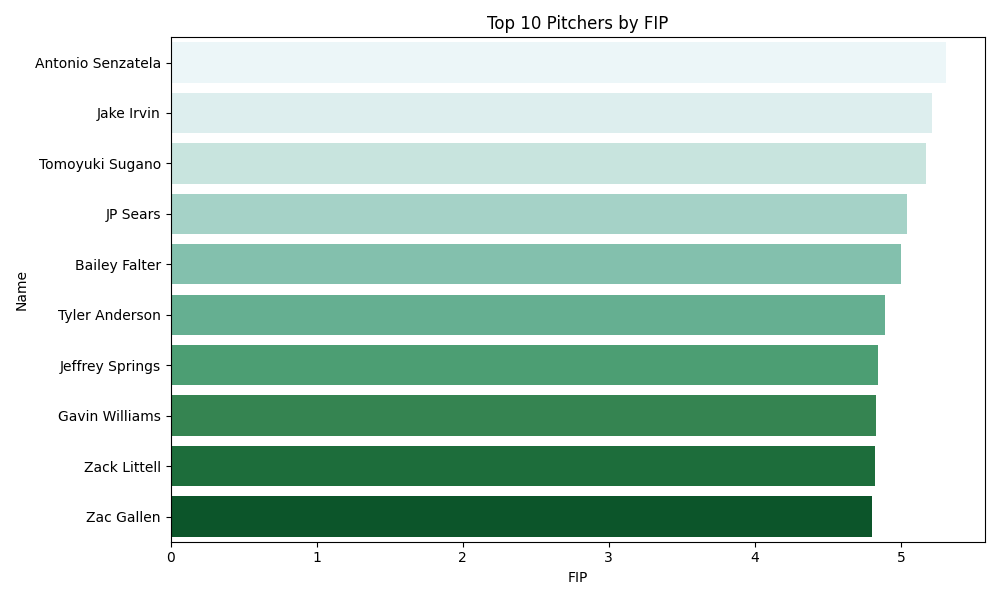
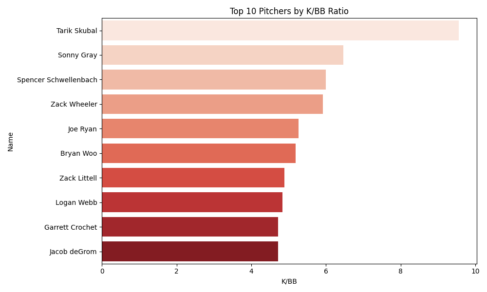
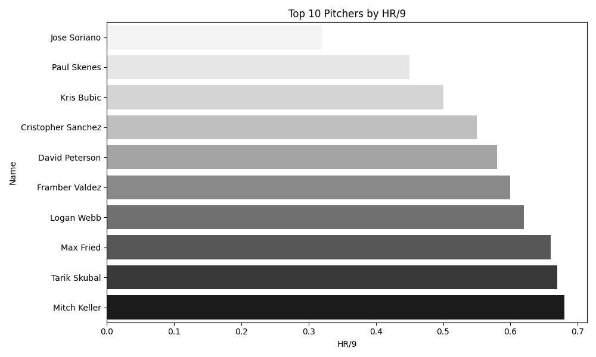

🔬 Advanced Pitching Metrics
FIP ?
Fielding Independent Pitching - ERA-like stat focusing on outcomes a pitcher can control

K/BB Ratio ?
Strikeout to Walk ratio - measures command

HR/9 ?
Home runs allowed per 9 innings
